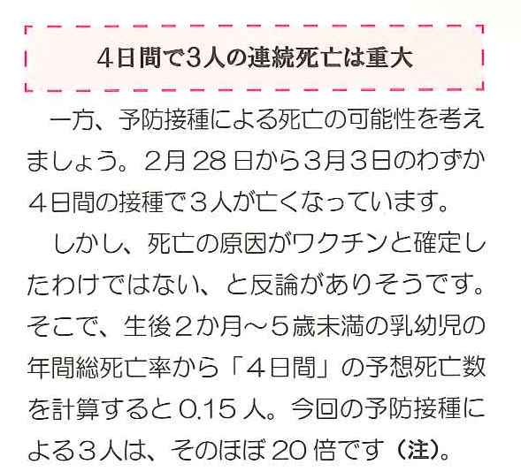

ヘモフィルス･インフルエンザ菌タイプbワクチン（Hibワクチン；商品名アクトヒブ）や肺炎球菌ワクチン （PCワクチン；商品名プレベナー）の予防接種を受けた乳幼児が相次いで死亡し、厚生労働省（厚労省）は3月4日、 接種を一時見合わせ、3月8日には中止を継続し、3月24日には再開を決定。4月1日から再開されました。
しかし、本当に再開して安全なのか、と、再開を苦慮している自治体や小児科医は少なくないと思われます。
薬のチェックは命のチェックでは、現時点で可能な限りのリスク評価を試み、死亡数が全死亡や重症細菌感染の罹患、乳児突然死症候群（SIDS）による死亡数と比較して著しく多いことが分かりました。したがって、正確な数字によって安全性が確認できるまでは、両ワクチンは、当分の間、中止する、というのが適切な判断であると考えるに至りました。
薬のチェックは命のチェックNo42（4月10日発行）では、「ヒブ・肺炎球菌ワクチンは安全か」というタイトルで速報を掲載しました。危険度の倍率の計算が不正確でしたので、正確な危険度を計算し直し、以下に記しました（結論は全く同じです）。
また、TIP誌（4月号）に専門家向けの検討結果を掲載しています。
（なお文献番号16)と36)が逆転していましたので2011.5.1修正しました）
|  | ⇒ | 接種後1日以内に3人死亡は重大一方、予防接種による死亡の可能性を考えましょう。2月4日から3月3日までの約1か月間に6人が接種後亡くなりました。 しかも、1日以内に3人、3日以内では5人が亡くなりました。このように接種直後に死亡が集中し、 しかもいろんな死因ではなく、ほとんどが「乳児突然死症候群（SIDS）に似た状態か呼吸異常による死亡」というように、 死亡に至る状況も偏っています。この点を考慮するだけでも関連はあるといえそうです。 しかし、もっと正確に、１日あたりの接種後初日、2日目から4日未満、4日目から7日未満の３つの時期に分けて危険度を計算しました。 こうすることによって、接種24時間以内の死亡の危険度が、全死因による死亡に比べて11倍超にもなることが分かったのです。 0歳から4歳までの子は500万人あまりいますが、乳児突然死症候群（SIDS）によって亡くなる子は、 現在年間160人程度に過ぎません。 ２日に1人あるかどうかです。それが約25.3万人（注）と推定された接種者から1日で3人亡くなったのです。 ワクチン接種後初日の突然死の危険度は、この年齢のSIDSによる死亡の危険度の147倍と推定されました。 なお、注：の最後の行の「2倍に相当する・・・・に達する。」は削除します。 |
No42では、3月はじめに連続して報告された4日間で3人の死亡、に注目していましたが、これはあまりにも短期間に集中していました。その後も死亡例が追加され、3月24日までに合計8人の報告がありました。2年間の全接種で8人というのでは、あまりにも報告もれの多い時期を含んでしまいます。
そこで、2月初めから3月初め（一時中止決定まで）の約1か月間に接種を受けて死亡した6人を分子とし、 その間の接種者を約25.3万人と推定して分母として、危険度を計算しました。また、接種後初日、2日目から4日未満、4日目から7日未満の３つの時期に分けて危険度を計算しました。
こうすることによって、接種24時間以内の死亡の危険度が、全死因による死亡に比べて11.5倍にもなることが分かりました。
また、乳児突然死症候群による死亡と比較すると、約150倍という危険度になりますので、 このように接種後短期間に乳児突然死症候群が多発することは、とても偶然とは考えられません。
正確に危険度を分析することができ、Hibワクチン・肺炎球菌ワクチンの危険度が著しく高いことを、 自信をもってお伝えすることが可能となりました。
また今回、効力についても詳細に検討しました。その結果、分析前に考えていたほど効力は明瞭なものではなく、 先進国でも、フィリピンなど途上国でも、ランダム化比較試験（公平な比較試験）で 有効との効力評価は必ずしも得られているわけではないことが分かりました。
医療者の方には、ぜひとも十分に読んでいただきたく思います。また、 わが子や孫に対して接種をどうしようかと迷っておられる方々には、接種見合わせを継続しておかれることを強くお奨めします。